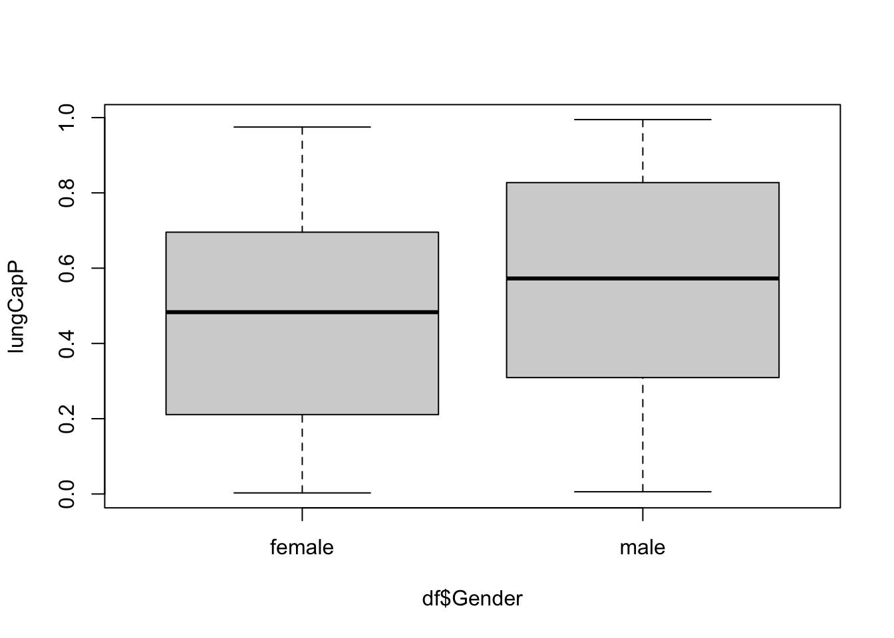

Code
library(tidyverse)
library(readxl)
library(ggplot2)
library(dplyr)
library(tidyr)
knitr::opts_chunk$set(echo = TRUE)library(tidyverse)
library(readxl)
library(ggplot2)
library(dplyr)
library(tidyr)
knitr::opts_chunk$set(echo = TRUE)df <- read_excel("_data/LungCapData.xls")hist(df$LungCap)
The distribution looks normal, the observations are centered around the mean with minimal outliers.
lungCapP <- pnorm(df$LungCap, mean(df$LungCap), sd(df$LungCap))
boxplot(lungCapP~df$Gender)
For both male and female, the probability distribution of the LungCap is similiar. For male, the median line is slightly higher than female, suggesting that their average lungCap is slightly higher for males than females. Also, for male the median is directly in the middle, suggesting that the data isn’t particularly skewed. For female the split appears to have more values fall below the mean than above, telling us that the data skews moreso than for male.
dfSmokeLungCap <- df %>% group_by(Smoke) %>%
summarise(mean_LungCap=mean(LungCap))
print(dfSmokeLungCap)# A tibble: 2 × 2
Smoke mean_LungCap
<chr> <dbl>
1 no 7.77
2 yes 8.65No, the lungCap average does not make sense. We would expect that the lung capacity for smokers would be lower than it is for non-smokers, but we are seeing the opposite, as the lungCap for smokers is higher than it is for non-smokers.
dfAgeRanges <- df %>%
mutate(ageRange = case_when(
df$Age<=13 ~ "A",
between(df$Age, 14, 15) ~ "B",
between(df$Age, 16, 17) ~ "C",
df$Age>=18 ~ "D"
))
print(dfAgeRanges)# A tibble: 725 × 7
LungCap Age Height Smoke Gender Caesarean ageRange
<dbl> <dbl> <dbl> <chr> <chr> <chr> <chr>
1 6.48 6 62.1 no male no A
2 10.1 18 74.7 yes female no D
3 9.55 16 69.7 no female yes C
4 11.1 14 71 no male no B
5 4.8 5 56.9 no male no A
6 6.22 11 58.7 no female no A
7 4.95 8 63.3 no male yes A
8 7.32 11 70.4 no male no A
9 8.88 15 70.5 no male no B
10 6.8 11 59.2 no male no A
# … with 715 more rowsdfMeanAgeRanges <- dfAgeRanges %>% group_by(ageRange, Smoke) %>%
summarise(mean_LungCap=mean(LungCap))`summarise()` has grouped output by 'ageRange'. You can override using the
`.groups` argument.print(dfMeanAgeRanges)# A tibble: 8 × 3
# Groups: ageRange [4]
ageRange Smoke mean_LungCap
<chr> <chr> <dbl>
1 A no 6.36
2 A yes 7.20
3 B no 9.14
4 B yes 8.39
5 C no 10.5
6 C yes 9.38
7 D no 11.1
8 D yes 10.5 Here, there is a more varied relationship between smoking and lung capacity due to age as a mitigating variable. Here, the lung capacity for non-smokers is higher than the lung capacity for smokers in youngest age range, but the other age ranges display the opposite relationship. This may be due to the possibility that smoking has a stronger influence on lungCapacity the longer you smoke. So younger folks may have only smoked for a year or so, while folks in the older age ranges have spent many more years smoking. While there still isn’t a clear indirect or direct relationship between smoking and lung capacity with this view, adding the ageRange variable showed that there is more to the relationship than was found in part C.
x <- c(0,1,2,3,4)
frequency <- c(128,434,160,64,24)
df_2 <- data.frame(x, frequency)prob_a = dpois(df_2[3,1], df_2[3,2]/(sum(df_2$frequency)))
print(prob_a)[1] 0.01601229prob_b = ppois(df_2[2,1], (df_2[2,2]+df_2[1,2])/(sum(df_2$frequency)))
print(prob_b)[1] 0.8463379prob_c = ppois(df_2[3,1], (df_2[3,2]+df_2[2,2]+df_2[1,2])/(sum(df_2$frequency)))
print(prob_c)[1] 0.9385585df_2d <- df_2[4:5,]
prob_d = 1 - (ppois(df_2d[2,1],(df_2[4,2]+df_2[5,2])/(sum(df_2$frequency))))
print(prob_d) [1] 1.15223e-07probs_e = dpois(df_2$x, df_2$frequency/(sum(df_2$frequency)))
eval = sum(df_2$x*probs_e)
print(eval)[1] 0.3458039var_f <- var(rep(df_2$x, df_2$frequency))
print(var_f)[1] 0.8572937sd_f <- sd(rep(df_2$x, df_2$frequency))
print(sd_f)[1] 0.9259016